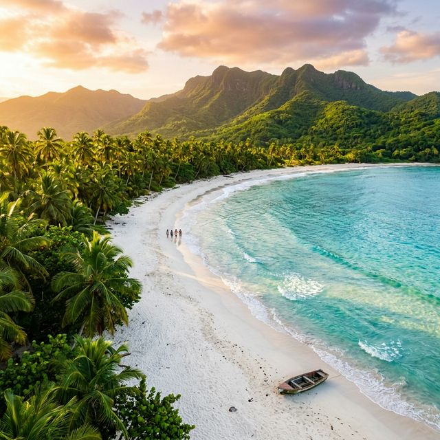
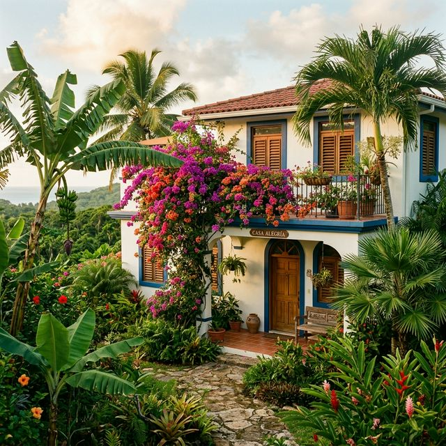
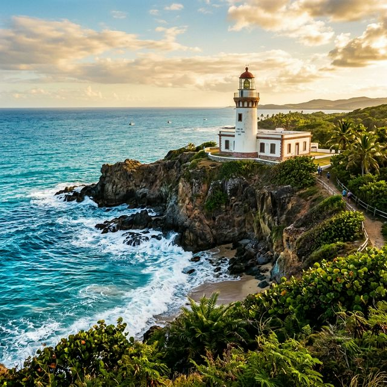

Bachelorette Party in Puerto Rico: The Complete Planning Guide
Someone in the group chat just got engaged. The maid of honor has three weeks to figure out a bachelorette trip that works for eight women with different budgets, different PTO balances, and very different opinions about what counts as fun.
Miami is overdone. Cancun requires passports (and someone always forgets). Nashville is the same bachelorette trip everyone else is having. Tulum is a 14-hour travel day.
Puerto Rico lands in the center of the Venn diagram: Caribbean beaches, real nightlife, cultural depth, no passport, domestic flights, and prices that do not require a second mortgage. The bride gets her beach photos. The party girl gets her club night. The introvert gets her quiet morning. And the maid of honor does not go into debt planning it.

Why Puerto Rico Over Every Other Bachelorette Destination
| Factor | Puerto Rico | Miami | Nashville | Cancun | Tulum |
|---|---|---|---|---|---|
| Passport needed | No | No | No | Yes | Yes |
| Round-trip flights (from NYC) | $180-350 | $150-300 | $200-350 | $300-500 | $350-550 |
| Avg accommodation (group, per night) | $150-300 | $300-600 | $250-500 | $200-400 | $250-500 |
| Beach quality | Excellent | Good | N/A | Excellent | Excellent |
| Nightlife | Strong | Excellent | Excellent | Strong | Moderate |
| Cultural activities | Exceptional | Moderate | Moderate | Good | Good |
| Safety for groups of women | Good | Good | Good | Moderate | Moderate |
| Instagram factor | Very high | High | High | High | Very high |
| Average total cost per person (4 nights) | $800-1,200 | $1,200-2,000 | $1,000-1,600 | $1,200-1,800 | $1,300-2,000 |
Puerto Rico gives you more variety per dollar than any other option. Beach day, historical fortress, rainforest hike, salsa dancing, rooftop cocktails, boat trip — all within a 4-day trip, all without a passport.
Villa vs. Hotel for a Bachelorette Group
The standard move is booking a block of hotel rooms. For a bachelorette, a villa is almost always better.
The villa advantage for bach parties:
- One common space. Everyone gathers in the living room and kitchen, not scattered across hotel floors. This is where the stories happen.
- Kitchen for pre-game. Make cocktails at the house before going out. A bottle of rum in Puerto Rico costs $8-15. A cocktail at a San Juan bar costs $14-18. For eight women, pre-gaming at the villa saves $200+ per night out.
- No noise complaints. In a villa, you are the only guests. At 11 PM, when someone is blending frozen drinks and telling the engagement story for the third time, nobody is calling the front desk.
- Getting ready together. One of the best parts of a bach trip is the group getting-ready ritual. A villa with multiple bathrooms and mirrors makes this possible. A single hotel room mirror does not.
- Cost split. A 3BR villa at $172/night split 6 ways is $29/person/night. Find a hotel room in San Juan for $29/night. You cannot.
- Pool/outdoor space for day drinking. Many villas have private or semi-private outdoor space. No competing with resort guests for lounge chairs.
Casa Chunan for the Bachelorette Squad
Casa Chunan in Maunabo: three bedrooms, two baths, full kitchen, tropical garden, and a quiet residential setting. $172/night.
For a group of 6:
- Two people per bedroom
- $29/person/night ($116/person for a 4-night stay)
- Full kitchen for breakfast, snacks, and cocktail prep
- Outdoor space for morning yoga, sunset wine, or a photoshoot in the tropical garden
- Close to quiet beaches for the daytime; 1.5 hours from San Juan nightlife for the evening
- No resort staff judging your matching swimsuits
The play: Use Casa Chunan as a peaceful home base for beach days, pool days, and recovery mornings. Drive into San Juan for one or two big nights out. Combine relaxation and party without choosing one or the other.

The 4-Day Bachelorette Itinerary
Day 1: Arrival + Villa Night
Afternoon:
- Arrive at SJU (Luis Munoz Marin International Airport)
- Pick up rental car(s) — one SUV fits 7-8 with luggage, or grab two sedans
- Grocery and liquor stop at Walmart or Econo in Humacao (45 min from airport)
- Stock up: Don Q or Bacardi rum ($8-15), mixers, breakfast supplies, snacks, wine
- Arrive at Casa Chunan, unpack, claim beds
Evening:
- Welcome cocktails on the patio — someone makes a pitcher of pina coladas with real Puerto Rican rum
- Order delivery or cook a simple dinner at the villa
- Gift-opening, games, and a chill first night — nobody has the energy for a club after flying
- Matching pajamas photo (get it out of the way)
Day 2: Beach Day + Pre-Game + Night Out
Morning:
- Breakfast at the villa (someone makes a big batch of scrambled eggs, fruit, coffee)
- Beach at Playa Los Bohios (5 min) or drive to Luquillo Beach (50 min) for the kiosks and wider sand
- Bring a speaker, matching coverups, the "bride" floppy hat
Afternoon:
- Return to villa by 3 PM
- Pool/garden time — cocktails, snacks, music
- Group getting-ready session starts at 5 PM (this takes 2 hours, always)
Evening:
- Drive to San Juan (1.5 hrs — designate drivers or book a driver service, ~$80-100 each way for a van)
- Dinner at Santaella (Santurce, upscale-casual, reservations essential, $40-60/person) or Marmalade (Old San Juan, prix fixe $75)
- La Placita de Santurce — open-air market turned nightlife district. Bars, salsa music, dancing, people everywhere. No cover charges. Drinks $8-15. This is the move for bachelorettes.
- Optional: club hopping in Condado (La Factoria is the cocktail bar everyone talks about; Brava is the dance club)
Day 3: Adventure Day
Morning:
- Sleep in (you earned it)
- Light breakfast, hydrate, regroup
- Drive to El Yunque National Forest (45 min from Maunabo)
Late Morning:
- El Yunque hike: La Mina Trail to the waterfall (1.4 miles round trip)
- Waterfall swimsuit photos under the cascade
- Alternatively: skip the hike and go to Juan Diego Falls for a shorter walk and swimming hole
Afternoon:
- Lunch at Luquillo Kiosks (60+ food stalls on the beach, $8-15/plate)
- Option A: Catamaran or boat tour out of Fajardo (half-day snorkel trips to Icacos Island, $70-90/person, book 2 weeks ahead)
- Option B: Spa and wellness — The Ritz-Carlton Dorado Beach spa does day passes and treatments ($150-300/person), or find a local massage therapist in Humacao ($60-80/hour)
Evening:
- Return to villa
- Cook-in or order delivery — tonight is a quiet one
- Facemasks, wine, a romcom on the projector if the villa has one, stories about the bride
Day 4: Old San Juan + Farewell
Morning:
- Check out or prepare to check out (depending on flight times)
- Drive to Old San Juan (1.5 hours)
Late Morning:
- Explore Old San Juan on foot:
- Paseo de la Princesa — waterfront promenade, tree-lined, fountain at the end
- La Puerta de San Juan — the old city gate, great group photo spot
- Calle del Cristo — colorful street, boutiques, cafes
- El Morro Fortress — $10/person, kite-flying lawn, 16th-century walls, ocean views
- The blue cobblestones — adoquines, only found in Old San Juan
Afternoon:
- Farewell brunch at Cafe Don Ruiz (Old San Juan, local coffee and brunch, $15-25/person) or Verde Mesa (farm-to-table, $20-30/person)
- Final group photo at one of Old San Juan's colorful doors
- Souvenir shopping: local coffee, hot sauce, rum, handmade jewelry
Late Afternoon/Evening:
- Drive to airport (20 minutes from Old San Juan)
- Fly home, sunburned and full of stories
The Budget Breakdown (6 People, 4 Nights)
| Expense | Total (group) | Per Person |
|---|---|---|
| Flights (round-trip, mainland US avg) | $1,500-2,400 | $250-400 |
| Accommodation (Casa Chunan, 4 nights x $172) | $688 | $115 |
| Rental car (SUV, 4 days) | $280-400 | $47-67 |
| Gas | $60-80 | $10-13 |
| Groceries + liquor | $300-400 | $50-67 |
| Dinners out (2 nice meals) | $600-900 | $100-150 |
| Activities (El Yunque, boat tour, etc.) | $500-800 | $83-133 |
| Transportation to San Juan nightlife (van service) | $160-200 | $27-33 |
| Bar/club spending (2 nights) | $480-720 | $80-120 |
| Total | $4,568-5,900 | $762-983 |
For 8 people, the per-person cost drops further — accommodation goes to $86/person for 4 nights, car and gas split thinner, and group dining gets cheaper.
Compare this to a Miami bachelorette: $300+/night for a house that fits 8, South Beach dinner tabs at $80/person, club covers at $30-50, VIP bottle service starting at $500. Miami runs $1,500-2,500/person easily. Puerto Rico delivers a better trip for half the price.
The Instagram Spots
Every bach trip needs photos. Puerto Rico delivers.
Can't-miss photo locations:
- Colorful doors of Old San Juan — Calle San Jose, Calle del Cristo, Calle Fortaleza. Dozens of brightly painted colonial doors and facades. Bring coordinated outfits.
- El Morro Fortress lawn — Wide green lawn with the Atlantic Ocean behind it and a 16th-century fortress above. Kites make the background even better.
- La Puerta de San Juan — The red city gate against stone walls. Clean, bold, classic.
- Paseo de la Princesa — Tree-lined walkway with the bay behind you. Golden hour is 5:30-6:30 PM.
- Punta Tuna Lighthouse, Maunabo — White lighthouse on a cliff above the ocean. 10 minutes from Casa Chunan. Almost no other tourists.
- El Yunque waterfall — La Mina Falls or Juan Diego Falls. Swimsuit shots under a tropical waterfall in a literal rainforest.
- Luquillo Beach — Long, wide beach with palm trees. The classic Caribbean backdrop.
- La Placita at night — Neon lights, crowded energy, cocktails in hand. This is the "going out" photo.
- Casa Chunan tropical garden — Lush greenery, natural light, matching robes, coffee in hand. The "morning after" content.
Photo tips:
- Golden hour in PR: approximately 5:30-6:30 PM year-round
- Old San Juan is best photographed before 10 AM (fewer crowds, softer light) or during golden hour
- Bring a portable phone tripod for group shots
- The blue cobblestones in Old San Juan photograph best when wet — early morning or after a rain

What to Pack
The essentials:
- Matching group gear (swimsuits, coverups, pajamas, going-out fits — coordinate early)
- Reef-safe sunscreen (required by law in Puerto Rico)
- Comfortable walking shoes for Old San Juan cobblestones (no stilettos on 500-year-old streets)
- Going-out shoes for San Juan nightlife
- Swimsuits (bring 2-3 minimum)
- Light rain jacket or poncho (tropical showers happen fast)
- Bug spray for evenings
- Portable speaker (waterproof)
- Sash/tiara/bride accessories (obviously)
- Hangover recovery: electrolytes, ibuprofen, under-eye patches
What to leave at home:
- Formal gowns — PR nightlife is upscale-casual, not black-tie
- Too much cash — card is accepted almost everywhere; carry $50-100 for small vendors
- Anxiety about the language barrier — most people in tourist areas speak English; in Maunabo, some Spanish helps but smiles work everywhere
What to Book in Advance
| Item | When to Book | Why |
|---|---|---|
| Flights | 6-8 weeks ahead | Prices spike closer to travel; JetBlue, Spirit, and United run frequent SJU routes |
| Casa Chunan | 4-6 weeks ahead | Weekends book up, especially Dec-Apr |
| Dinner at Santaella or Marmalade | 2-3 weeks ahead | Popular for groups; call ahead for a table of 6-8 |
| Catamaran / boat tour (Fajardo) | 2-3 weeks ahead | Sells out, especially weekends and high season |
| El Yunque trail reservations | 1-2 weeks ahead | $2/person, free under 15; reserve at recreation.gov |
| Van/driver service (San Juan night out) | 1 week ahead | Ask your host for a recommendation; Uber/Lyft work in San Juan but availability fluctuates late-night |
| Spa treatments | 1-2 weeks ahead | If going to Dorado Beach Ritz or a specific therapist |
Day-Trip Alternatives If You Want More Adventure
Not every bach group wants the same itinerary. Swap in any of these:
- Bio bay kayaking (Fajardo) — Paddle through bioluminescent water at night. Unforgettable. $60-80/person. Book 2-3 weeks ahead.
- Horseback riding on the beach — Operators in Isabela and Rincon offer sunset beach rides. $75-100/person.
- Salsa or bachata class — Studios in San Juan offer group lessons. $20-30/person for a 1-hour class. Go before your night out and actually use the moves.
- Catamaran sunset cruise — Several operators out of San Juan Bay. $65-85/person with drinks included.
- Rum distillery tour — Casa Bacardi in Catano (across the bay from Old San Juan). Free basic tour, $15-45 for tasting experiences.
- Surfing lesson — Beginner lessons in Rincon or Aguadilla. $65-85/person for a 90-minute group session.
Safety Tips for Groups of Women
Puerto Rico is generally safe for groups of women traveling together, with the same awareness you would exercise in any US city.
- Stick together at night. La Placita and Condado are well-lit and populated, but standard group safety applies.
- Use rideshare when possible. Uber and Lyft operate in the San Juan metro. Outside the metro, have a designated driver or pre-book transportation.
- Watch your drinks. Same advice as any bar, anywhere.
- Keep valuables locked up. Do not leave bags unattended on the beach. Use the villa safe or keep valuables locked in the car trunk.
- Emergency services: 911 works island-wide. You are in a US territory — familiar systems apply.
- Late-night transportation: After 1-2 AM, rideshare availability drops. Plan your return ride before you go out.
Book Your Bachelorette Villa in Puerto Rico
Three bedrooms, tropical garden, and beach access — from $29/person/night.
Check Availability at Casa ChunanFAQ: Puerto Rico Bachelorette Party
No. Puerto Rico is a US territory. All you need is a REAL ID-compliant driver's license or state ID for the domestic flight. This is the single biggest logistical advantage over Cancun, Tulum, or any international destination — no passport coordination across 8 people.
For a 4-night trip with 6 people: $760-980 per person including flights, accommodation at a villa like Casa Chunan, food, drinks, activities, and transportation. With 8 people, costs drop to roughly $680-900 per person. Significantly less than Miami ($1,500-2,500) or Cancun ($1,200-1,800).
For a mix of beach relaxation and nightlife access: a villa on the southeast coast (like Casa Chunan in Maunabo) with planned night-out trips to San Juan. For nightlife-first groups: an Airbnb in Condado or Santurce, walking distance to bars. For an all-beach vibe: Rincon or Vieques.
Very good. La Placita de Santurce is the island's most popular nightlife district — open-air bars, salsa music, no cover charges. Condado has upscale cocktail bars (La Factoria) and clubs. Old San Juan has rooftop bars and restaurant nightlife. The scene runs Thursday through Sunday and gets going around 10-11 PM.
December through April for the best weather and most reliable nightlife schedules. May-June and November for lower prices and fewer crowds. Avoid September if weather anxiety is a factor for the group.
Public drinking laws vary by municipality. Many beaches do not have strict enforcement, but technically it is restricted in some areas. The safer move: enjoy drinks at the villa or at a beachside bar. The legal drinking age in Puerto Rico is 18.